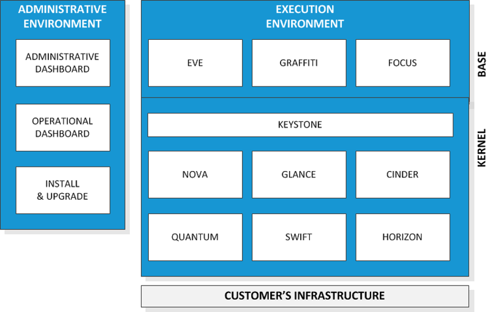
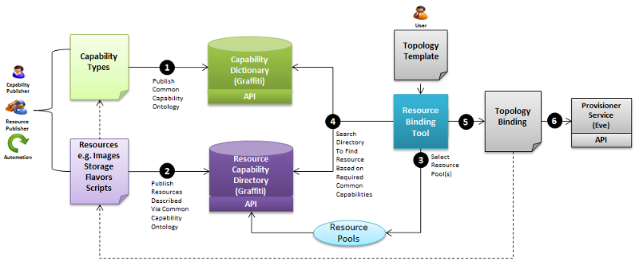

HP Cloud OS Technical Overview
Welcome! This technical overview introduces you to the HP Cloud OS architecture, its components and services, and the HP Cloud OS relationship with OpenStack.
Why is Cloud Computing Important?
Cloud computing is fundamentally changing the way technologists work. In today's enterprises, organizations are looking for ways to capitalize on opportunities for revenue growth and competitive advantages. To do this, they need to speed the rate of innovation, accelerate execution, and lower cost.
As enterprises build and evolve their cloud environments, they are realizing that vendor-specific, cloud-proprietary systems lock them into rising licensing costs, lack of transparency, poor reliability and performance, and the inability to easily move to another technology vendor. They recognize the potential benefits of cloud but they are concerned about security, compliance, complexity, vendor/technology lock-in, workload portability, and skill set gaps.
HP believes organizations need to implement a hybrid delivery strategy that leverages the right mix of cloud and traditional IT to optimize application and service creation and delivery.
What is HP Cloud OS?
HP Cloud OS is an enterprise-grade cloud technology that is open and extensible. Based on OpenStack, the fastest-growing open-source cloud community, Cloud OS provides a number of value-added services that complement and enhance OpenStack.
Cloud OS also provides the foundation for a common cloud architecture across private, public, and hybrid cloud delivery.
Understanding the HP Cloud OS Architecture
Cloud OS is organized into a set of services and an architecture that acts like a "datacenter-level" operating system focused on cloud computing.
Let's look at the components. HP Cloud OS provides two important environments:
An Administrative environment, which is used to manage the cloud.
An Execution environment, which is used to execute the cloud itself on top of the customer's infrastructure: servers, networks, and storage.
Used together, the two environments allow you to stand up, manage, and self-serve your cloud, based on Cloud OS.
In this technical overview, we will walk through the components illustrated here:

We'll start in the execution environment.
Execution Environment
The execution environment is broken into two components:
The HP Cloud OS kernel layer, which is similar to an operating system's kernel layer, across the cloud
The HP Cloud OS base layer, which is comprised of advanced services that sit above the kernel, like subsystem services in an operating system.
These execution components works together to create a cloud environment for a customer that's installable, manageable and usable by the users of that cloud.
Kernel Layer
The kernel layer is based on the OpenStack infrastructure set of services. All of Cloud OS is OpenStack powered. If we look at the kernel and the services that comprise it, we utilize services from OpenStack such as:
Keystone — the OpenStack identity management service. The Keystone service allows users and groups and multi-tenancy to be built into all the services that are based on HP Cloud OS.
Glance — the OpenStack image library service; Glance allows you to have a set of images that you can use to bootstrap virtual machines across the cloud, and manage all those images.
Nova — the OpenStack service for managing the various hypervisors and a virtual machines that you have across environment, whether it's a KVM Hypervisor, a Microsoft Hyper-V, or VMware ESXi Hypervisor.
Cinder — the OpenStack volume management service that allows you to take your storage architecture and infrastructure, and create volumes that can be attached to the virtual environment within the cloud.
Quantum (Neutron) — the virtual networking service in OpenStack that allows you to create and provision virtual networks.
Swift — the OpenStack highly available, distributed, eventually consistent object/blob store. Organizations can use Swift to store lots of data efficiently, safely, and cheaply.
Horizon — the OpenStack dashboard, which provides a web based user interface to OpenStack services including Nova, Swift, Keystone, and so on.
HP Cloud OS has provided an enhanced version with two UI dashboards, as described later in this topic.
Along with these services that make up the kernel layer of Cloud OS, we also have a set of plugins that attach to your infrastructure environment. We provide plugins in the following ways.
For Nova, we provide the KVM plugin so that we manage KVM hypervisor along with the Nova service.
For Cinder, we provide an LVM plugin that does Logical Volume Management so that you can do raw storage or logical volumes.
For Quantum, we provide an Open vSwitch plugin that allows you to open the switch plugin OpenFlow technology to do virtual networking across your environment.
Base Layer
On top of the kernel layer is the base layer, where we've created HP Cloud OS value-added services to provide advanced, additional functionality that goes beyond the basic infrastructure service. The value-added services from HP Cloud OS are:
Eve
Graffiti
Focus
Eve Service
Eve is the HP Cloud OS infrastructure topology provisioning service. Eve allows you to:
Provision TOSCA-based infrastructure topology designs (composite, hybrid, and distributed).
Separate topology creation and resource pool binding, for simpler, reusable topologies.
Integrate via a plug-in model with Cloud API's (e.g., OpenStack Nova) for orchestrating provisioning.
Create and configure network services such as virtual load-balancers and configuration management services.
Eve also provides a logical execution container for flexible deployment of web-scale, stateless, thread controlled, non-blocking coarse-grained services. This additional functionality in Eve allows you to:
Retrieve the list of provisioning jobs
Retrieve information about a specific provisioning job
Graffiti Service
Graffiti is the HP Cloud OS Resource Pool Registry and Capability Tagging Service, providing:
A dictionary of the "capabilities" of all the resources in a cloud environment
A searchable directory to find cloud resources based on their capabilities
The mechanism for dynamic binding, allowing you to describe requirements rather than concrete bindings
The base concepts of requirements and capabilities within TOSCA
As illustrated here, Graffiti allows users to:
Publish a Common Capability Ontology
Publish resources that are described by the Common Capability Ontology
Select resource pools
Search the Directory to find resource(s) based on required common capabilities
Provision a topology binding
Verify that the provisioning was successful in the cloud

Graffiti provides the ability to describe requirements and capabilities using a common ontology, to assign ("tag") requirements and capabilities to cloud resources, and to search for cloud resources based on their registered requirements and capabilities. In the simple elemental provisioning case, Graffiti aids in choosing the right elements. Graffiti becomes even more powerful when creating and "realizing" (completing and verifying) complex topologies.
Graffiti is the key to dynamic binding. It allows business users, service offering managers, and service designers to describe what they require without directly binding to what fulfills the requirements. It also allows the people who add cloud resources, service components, and services to describe what they provide. This feature allows design and service catalog portability across cloud environments (hybrid) as well as providing cloud environment administrators the ability to transparently change out everything from VM images to their process scripting engines, because they don't have to create tightly bound models.
Graffiti supports the base concepts of requirements and capabilities within the TOSCA specification, as well as key extensions to the TOSCA spec.
Focus Service
The HP Cloud OS Focus service serves as the Topology Design Registry and Repository Service. Focus provides for persistent store and management of TOSCA-based templates. Focus allows you to:
Focus allows you to:
Search for documents based on criteria
Store new documents
Retrieve a version of an existing document
Update the contents and/or metadata of a document
Delete a document or a specific document version
Administrative Environment
The Administrative environment allows operational specialists at your company to control the architecture of your cloud, and to perform lifecycle management of that architecture. HP Cloud OS provides dashboards and tools to accomplish those goals:
Operational Dashboard
Administrative Dashboard
Install and Upgrade Mechanisms
Operational Dashboard
HP Cloud OS provides the Operational Dashboard. It is used to complete the HP Cloud OS installation process after the Admin Node has been booted with the HP Cloud OS *.iso package.
On the Operational Dashboard, you set up your cloud environment, complete the Admin Node installation and configuration, and create a cloud.
The Operational Dashboard is used for the initial setup. It is not for the self-service users who will subsequently work in the Administrative Dashboard.
The Operational Dashboard, which is also based on OpenStack's Horizon (but again with significant improvements), allows authorized users to define the architecture of the cloud. With the Operational Dashboard, you can:
Change the plugins in which you connect the execution services to your infrastructure
Scale in the cloud, or scale out the cloud, enabling you to control the elasticity of the cloud itself
In terms of sequencing, you'll you can use the Administration Dashboard to view, allocate, and manage all virtual resources within a cloud.
Administration Dashboard
The HP Cloud OS Administration Dashboard enables self-service usage of the cloud. Any authorized user can use the Administrative Dashboard to interact with the cloud and build the user's own virtual resources in the cloud. The HP Cloud OS Administration Dashboard is based on the OpenStack "Horizon" technology; it looks and acts similar to Horizon, but at HP we have added new capabilities, and new user interface workflow features to provide a more streamlined experience with clouds.
The HP Cloud OS Administration Dashboard provides a simplified means of creating and managing HP Cloud OS resources, infrastructure topology designs, and infrastructure design documents.
The Administration Dashboard also provides the ability to provision a composite topology described by the topology designs and infrastructure design documents. Cloud OS launches infrastructure design documents to create virtual infrastructure in the cloud. The Administration Dashboard is associated with a single cloud.
Install and Upgrade Mechanism
As indicated in the conceptual diagram that started this technical overview, the Operational Dashboard sits on top of an install and upgrade component. It allows HP Cloud OS and its customers to perform tasks such as upgrading the software version of the cloud, patch components with fixes, and add/modify additional plugins that customers can choose based on their infrastructure needs, and how they want to differentiate their cloud.
Essentially, the whole install / upgrade mechanism allows us to manage the entire architecture of the cloud.
Summary
The HP Cloud OS architecture ensures that any product based on it will get a fundamental set of capabilities that are guaranteed across the implemented products. For example in a hybrid delivery mechanism, being able to use another cloud's resources (as if they were your own) will be consistent across all products that use HP Cloud OS.
HP Cloud OS provides the ability to produce a topology model for a multi-tier infrastructure. This model can then be mapped to a physical
resource pool at deployment time by creating a deployment profile. Multiple deployment profiles can be associated with a single topology
model enabling a "model-once deploy-anywhere" repeatable process, standardizing the deployment of workload infrastructure across a hybrid cloud.
The deployment profiles allow addressing capability and configuration differences that could exist between the different physical resource pools
for deploying a common topological model.